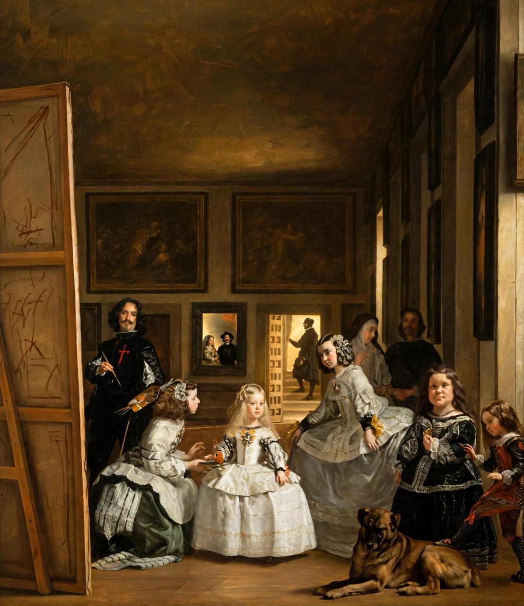

Las Meninas

Las Meninas (1656): the Infanta Margarita Teresa surrounded by her maids of honour in a palace room, Velázquez himself at a huge canvas at the leftLas Meninas (Spanish for 'The Ladies-in-Waiting') is a 1656 painting by Diego Velázquez in the Museo del Prado, Madrid, one of the most analysed works in Western art. Set in a large room of the Alcázar palace, it shows the Infanta Margarita Teresa attended by her meninas, a chaperone, a bodyguard, two dwarfs and a dog — while at the left Velázquez himself stands painting at an enormous canvas whose subject we cannot see.
The mirror at the back reflects King Philip IV and Queen Mariana, placing the viewer in the monarchs' position; whether the scene is a portrait sitting, a snapshot of court routine, or a claim for painting's status as a liberal art has been debated for centuries.
Composition and readings
The painting (319 × 276 cm) organises its gazes in a web: the Infanta, the painter, several attendants and the reflected king and queen all look out at the viewer, who stands where the royal couple — the apparent subject of the big canvas — must be. Foucault opened The Order of Things (1966) with a famous reading of it as a picture about representation itself; the cross of Santiago on Velázquez's chest was added later, legend says by the king's own hand.
Influence
Luca Giordano called it 'the theology of painting'. Manet modelled his early work on it, Picasso devoted 58 canvases to reinterpreting it in 1957, and Velázquez's loose late brushwork — visible up close as near-abstract touches — continues to make it the painters' painting. It has hung in the Prado since the museum opened in 1819.